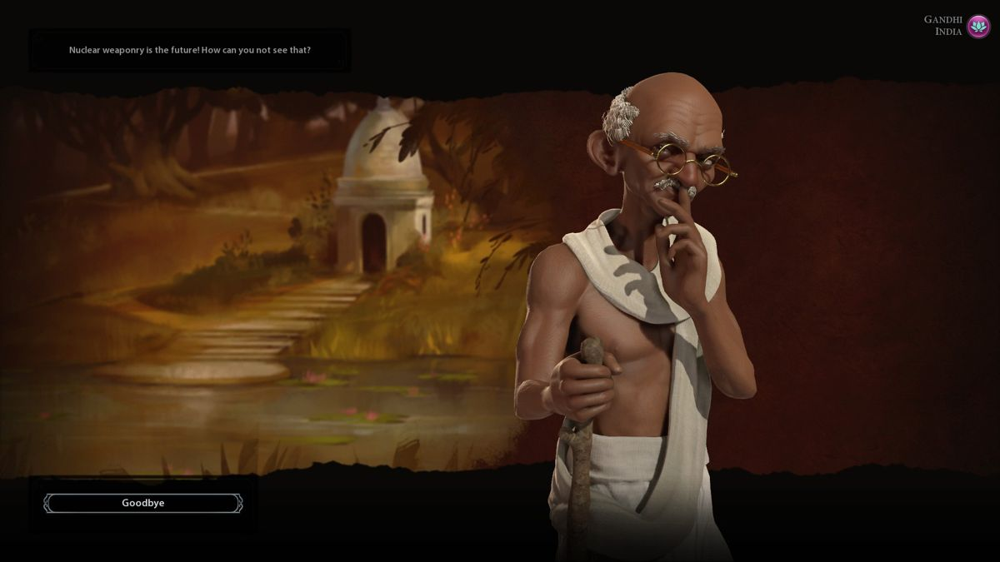
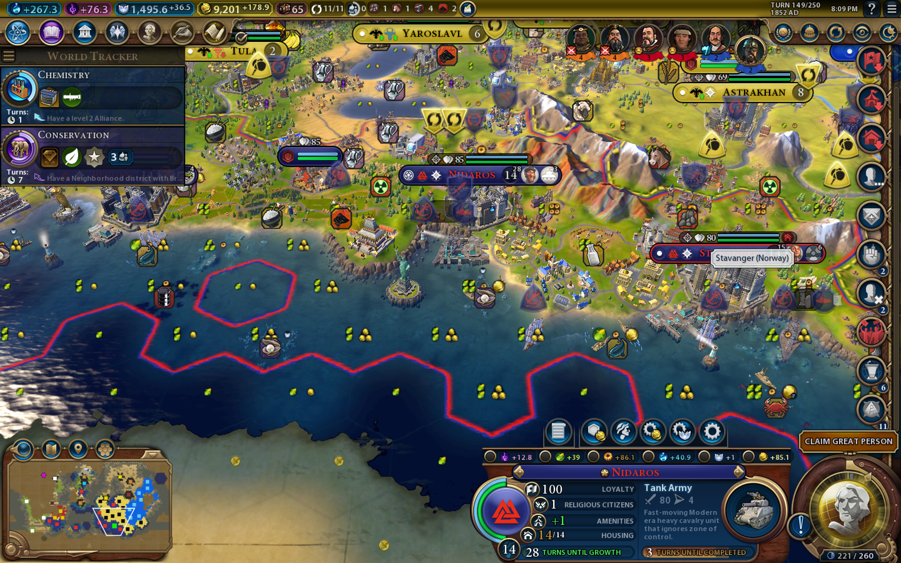
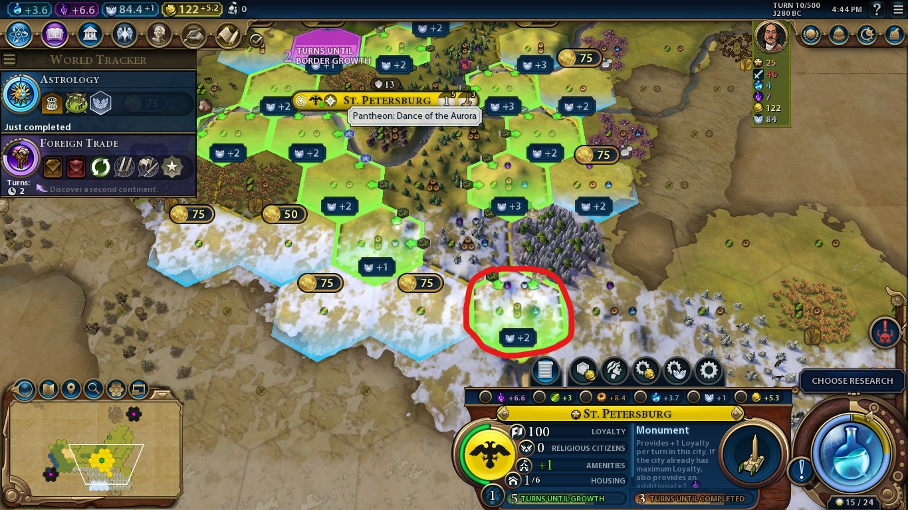

Publishing Info
- Developed by Firaxis Games
- Published on PC by 2K Games and published to consoles by Aspyr Media
- Released on October 21, 2016 for Windows
Overview
Basic Information
- Genre: Strategy
- Pacing: Turn-based
- Players: Offline single-player, online or offline multiplayer
- Gameplay: 4X, turn-based strategy
Description
Sid Meier’s Civilization VI is a single-player and multiplayer turn-based strategy game. As in previous entries in the Civilization series, the player leads a civilization from its founding in the ancient era through to the near future. The main objective is to guide the chosen nation to achieve one of several victory conditions, including domination, science, culture, religion, or diplomacy, while competing against rival leaders who pursue their own goals.
The core structure of the game remains centered on expanding cities, managing resources, and advancing through eras. A major change from earlier installments is the introduction of unstacked cities. Instead of every improvement being placed on the central city tile, specialized districts are built on separate hexes of the map. Each district focuses on a particular field such as science, culture, or military, and provides unique bonuses that tie city development to the surrounding terrain.
Progress is divided between two separate advancement trees. Technologies unlock scientific and industrial improvements, while civics provide cultural policies and forms of government. Certain achievements on the map, such as founding a city on the coast or engaging in combat, grant “Eureka” or “Inspiration” boosts that speed up the development of specific technologies or civics.
City growth is limited by two new systems. Amenities, which represent local happiness, are provided by luxuries, entertainment, or policies, and must be balanced to prevent unrest. Housing determines the maximum sustainable population of a city, forcing players to plan infrastructure and improvements to support growth.
Diplomatic and non-player systems also received significant revisions. City-states return but now offer unique suzerain bonuses to the civilization that invests the most envoys, adding another layer of competition. Great People no longer provide generic effects, but instead each one has a unique bonus that can only be used once recruited. Religion, first introduced in Civilization V: Gods and Kings, is expanded into its own victory condition.
Combat continues to use the one-unit-per-tile system introduced in Civilization V, but support units and corps/armies allow more flexibility in stacking. Sieges and movement are influenced by new rules for zones of control, fortifications, and city defenses.
The game supports both single-player campaigns against AI opponents and competitive or cooperative multiplayer sessions. Customization options include map types, world size, and difficulty levels.
Reception
The game received overwhelmingly positive reviews after release. Although some members of the fanbase had their grievances, critics unanimously praised the game.
Just buy it.
--Girl Gamers UK
Expansions and DLC
Civilization VI had an unusually long life span compared to other games in the franchise, receiving not just the expected 2 expansions but also several stand-alone DLC packs and 2 season passes.
Stand-Alone DLC Packs
- Aztec Civilization Pack, released on November 19, 2016
- Poland Civilization and Scenario Pack, released on December 20, 2016
- Vikings Scenario Pack, also released on December 20, 2016
- Australia Civilization and Scenario Pack, released on February 23, 2017
- Persia and Macedon Civilization and Scenario Pack, released on March 28, 2017
- Nubia Civilization and Scenario Pack, released on July 27, 2017
- Khmer and Indonesia Civilization and Scenario Pack, released on October 19, 2017
Expansions
- Civilization VI: Rise and Fall, released on February 8, 2018
- Civilization VI: Gathering Storm, released on February 14, 2019
Season Passes
- The New Frontier Pass, which released content bimonthly from May 2020 to March 2021
- The Leader Pass, which released content monthly from November 2022 to March 2023
It is theorized by fans that the Covid-19 Pandemic delayed the next title in the franchise, prompting the creation of additional DLC to tide fans over.
Screenshots


